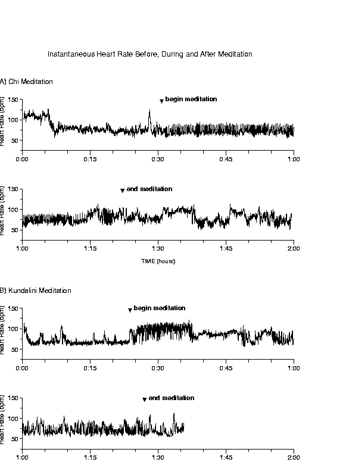
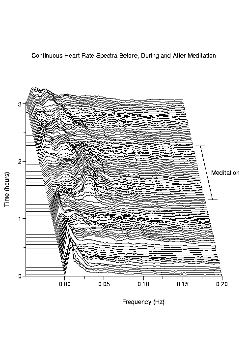
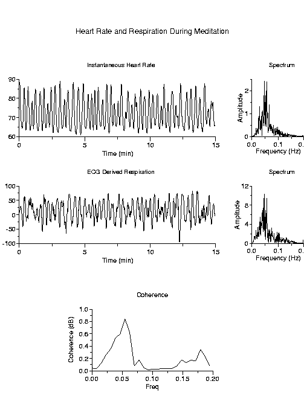

| Table I Group averages for median oscillation amplitude, Am (beats/min ± S.D.), and Fourier spectral power, S [(beat/min)2 ± S.D.]. | ||||||
| Meditators | Non-meditator Controls | |||||
| Chi (n=8) | Kundalini(n=4) | Spontaneous nocturnal | Metronomic | Elite athletes | ||
| pre-meditation | during meditation | pre-meditation | during meditation | breathing (n=11) | breathing (n=14) | (nocturnal) (n=9) |
| Am=4.34 ± 1.03 | 6.37 ± 2.41* | 3.41 ± 0.97 | 13.55 ± 3.41* | 3.78 ± 1.39ª | 3.20 ± 0.91© | 2.58 ± 1.37§ |
| S=22.27 ± 8.15 | 35.09 ± 19.59* | 14.40 ± 5.23 | 98.30 ± 43.35* | 18.71 ± 8.40ª | 10.98 ± 4.99© | 15.54 ± 11.41§ |
|
* p<0.01 for comparison of meditation
groups before and during meditation (paired t-test). ª p<10-4 for comparison of pooled meditation groups and spontaneous breathing control group (t-test). © p<10-4 for comparison of pooled meditation groups and metronomic breathing control group (t-test). § p<10-4 for comparison of pooled meditation groups and elite athletes group (t-test). Non-parametric comparison (Wilcoxon rank sums test) gives similar results. Note that the actual magnitude from minimum to maximum heart rate within one oscillatory cycle is equal to twice the amplitude computed with Hilbert transform technique used here. |
||||||

Figure 1:
Representative instantaneous sinus rhythm heart rate time
series, before, during, and after meditation for two meditation
protocols: A) Chi meditation, and B) Kundalini meditation. Notable
features of these time series from different subjects are i) the
complex variability of the fluctuations, and ii) the intermittent,
very prominent heart rate oscillations that correlated with
respiration.

Figure 2:
Three hours of continuous heart rate spectra,
before, during, and after Chi meditation. Spectra are calculated from
the instantaneous heart rate for 15-minute intervals every 109 seconds
using Lomb periodogram for unevenly sampled data
[6], and are smoothed using a sliding window 50
points wide. Note compaction of spectral energy in the 0.05 Hz band
during meditation.

Figure 3:
Fifteen minutes of heart rate and respiration during Chi
meditation. Both heart rate and ECG-derived respiration (EDR)
[5,4] were resampled at 2 Hz, locally detrended
with a sliding window 75 points wide, and smoothed with a sliding
window 11 points wide. Spectra were calculated using a Fast Fourier
Transform. The coherence plot confirms that the very prominent heart
rate oscillations at
Hz are correlated with respiration
at same rate.